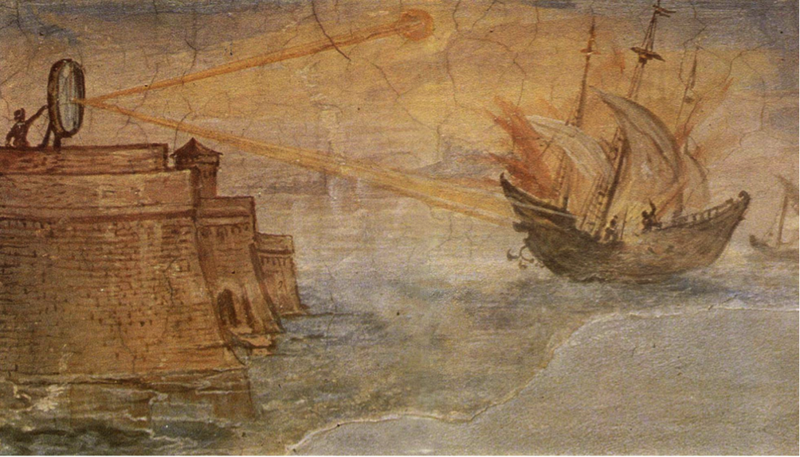

Desde siempre el hombre se ha dado cuenta de lo importante que es el Sol, los rayos solares, y el calor que estos producen. Establecer cuál fue el primer descubrimiento sobre la energía solar es muy difícil. Ya los egipcios y los griegos utilizaban laminas de cobre o plata pulidos para reflejar la luz del sol. Los romanos utilizaron por primera vez el “cristal“ para asegurar iluminación en sus viviendas y mantener el calor dentro. Y así, podemos ir conociendo pequeños avances en el aprovechamiento de la energía solar, hasta nuestros días, e incluso nuevas investigaciones para el futuro.
De una forma u otra, la energía solar siempre ha estado presente en la vida de nuestro planeta. Siendo ésta imprescindible para el desarrollo de la vida tal y como la conocemos. Sin embargo, la forma en que el hombre la ha aprovechado, descubriendo métodos, inventado herramientas nuevas, etc. ha sufrido una larga evolución. El Sol es indispensable para la existencia de vida en el planeta: es el responsable del ciclo del agua, de la fotosíntesis, etc. Ya las primeras civilizaciones se dieron cuenta de ello y, a medida que estas fueron evolucionando, también han evolucionado las técnicas para aprovechar su energía. Al principio fueron técnicas para aprovechar la energía solar de forma pasiva, más adelante se desarrollaron técnicas para aprovechar la energía solar térmica, y posteriormente se añadió la energía solar fotovoltaica.
